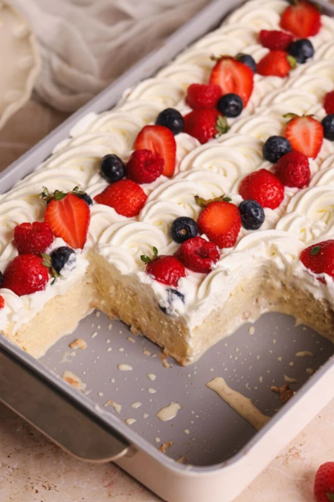

Welcome to my blog, where I share some of my favorite baking and cooking creations!
The purpose of this blog is to motivate and encourage people to find the bright side of things, even when we do not enjoy them at first. Here, I share some of my favorite foods, recipes, and kitchen tips. Whether I am baking something sweet or preparing a full meal, I love trying new recipes and learning new techniques, and I enjoy letting the people around me experience what I create.
Most Wanted Cake

Tres Leches
Tres Leches is one of my favorite desserts to make. It is a soft cake soaked in three different kinds of milk, which gives it a rich and moist texture. I enjoy making it because it is simple, sweet, and perfect for sharing with family and friends.
Choose a Recipe Category
Select a category to see some of the foods featured on this website.
Something I've Learned Along the Way
Take a moment to listen to a few tips that have helped me overcome kitchen challenges and stay motivated along the way.
Kitchen Inspiration
Usually, one's cooking is better than one thinks it is.
-Julia Child